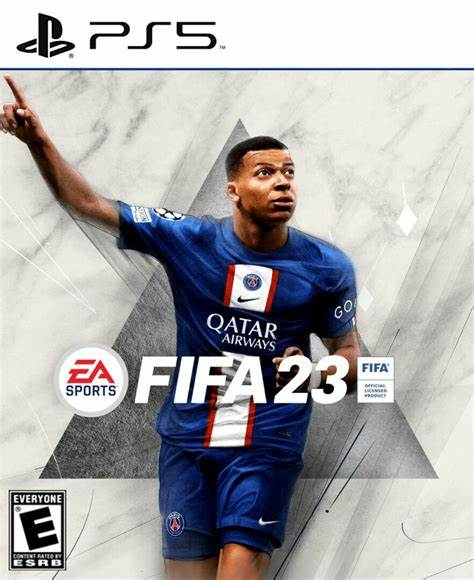
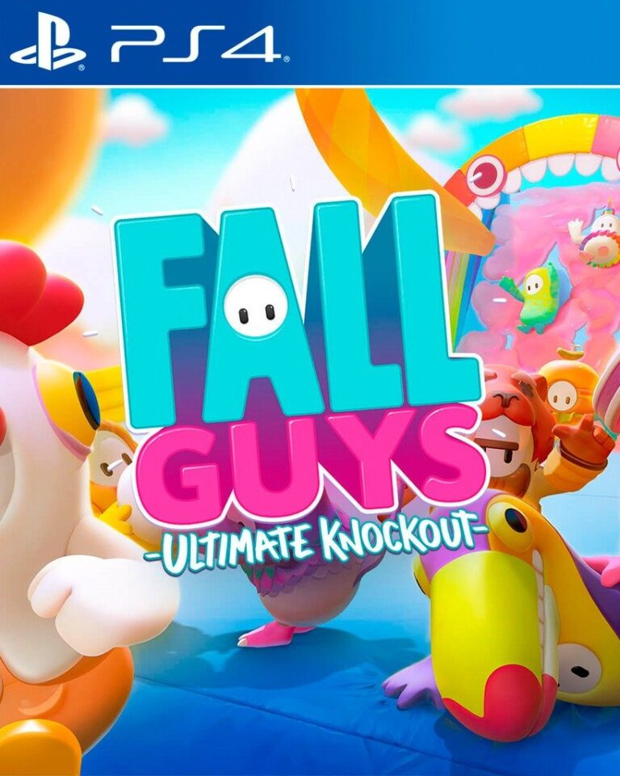
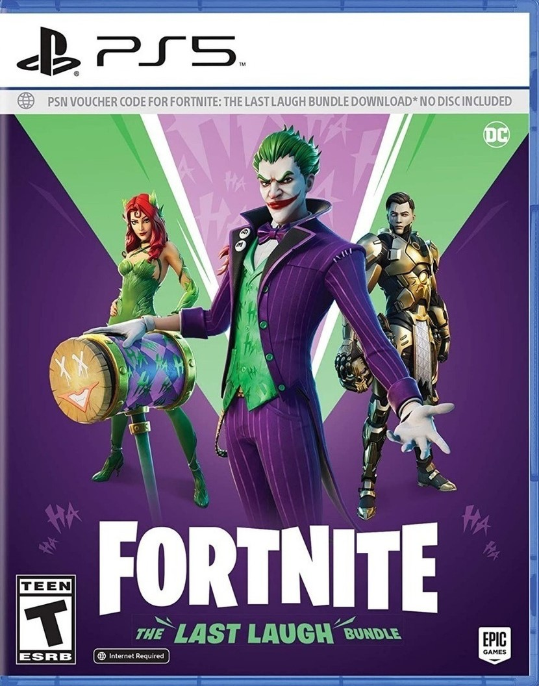
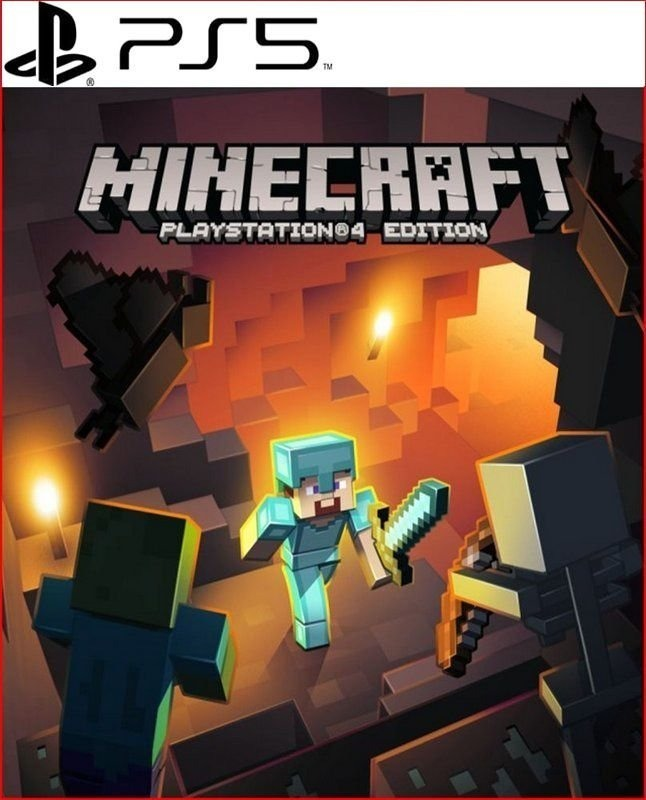

| Fifa. | Fall Guys. | Fortnite. | Minecraft. |
|---|---|---|---|
|
FIFA 23 nos acerca aún más a la acción y al realismo con The World's Game y la tecnología HyperMotion2* en PlayStation®5, con el doble de capturas de movimiento del mundo real y animaciones más auténticas que nunca en cada partido. Además, ya puedes jugar a la FIFA World CupTM masculina en FIFA 23. |
Las consolas de Sony ofrecen una experiencia mas que óptima para jugar a 'Fall Guys'. En PlayStation 4 jugamos a 60FPS con unos gráficos muy detallados. En PlayStation 5 incluso podemos seleccionar el modo 120FPS y el juego ofrece un aspecto visual todavía más impactante. |
Las consolas de Sony ofrecen una experiencia óptima para jugar a 'Fortnite'. En PlayStation 4 jugamos a 60FPS con unos gráficos muy detallados. En PlayStation 5 incluso podemos seleccionar el modo 120FPS y el juego ofrece un aspecto visual todavía más impactante. |
El rendimiento técnico sí ha cumplido las promesas: los gráficos se mueven con bastante solidez en 1080p y 60 frames por segundo y, además, el mundo que generemos puede ser hasta 36 veces más grandes que en la entrega previa. Además, la distancia de dibujado (es decir, desde qué distancia "brotan" los objetos) también se ha mejorado. Por supuesto, no es tan redondo como la versión PC ni en su interfaz (el contro, con ratón es más cómodo) ni por su versatilidad (hay un mundo de mods por descubrir en ordenadores), pero es una conversión muy acertada. |
|  |  |  |  |